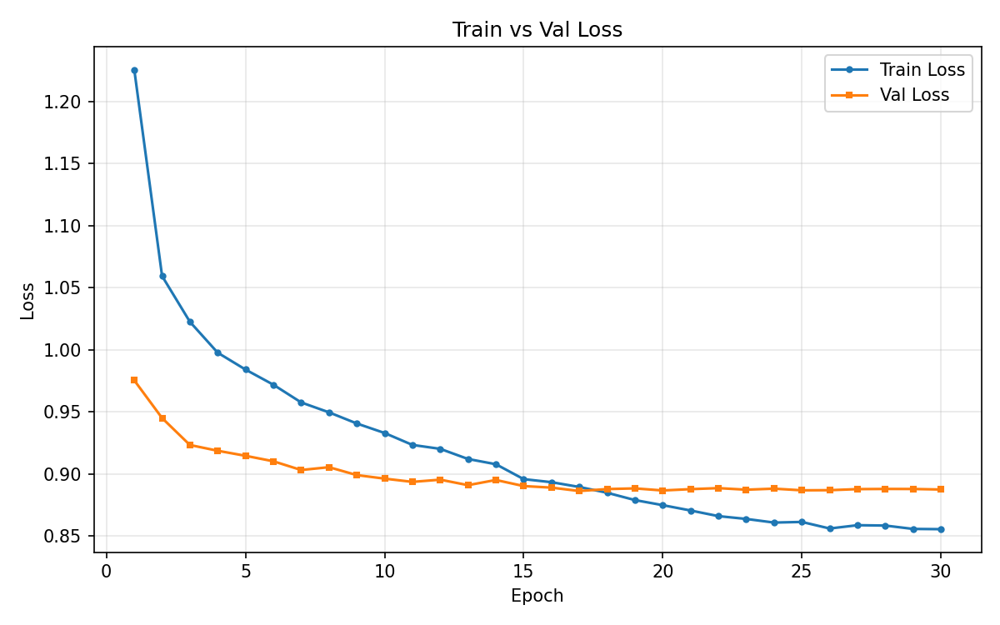
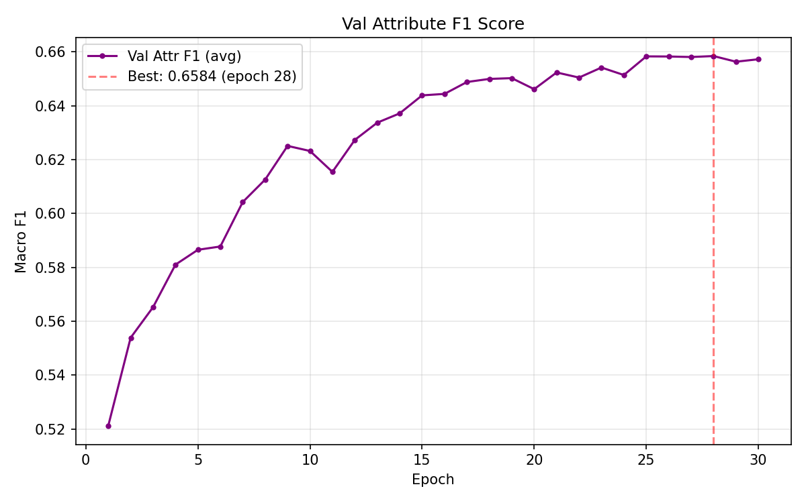
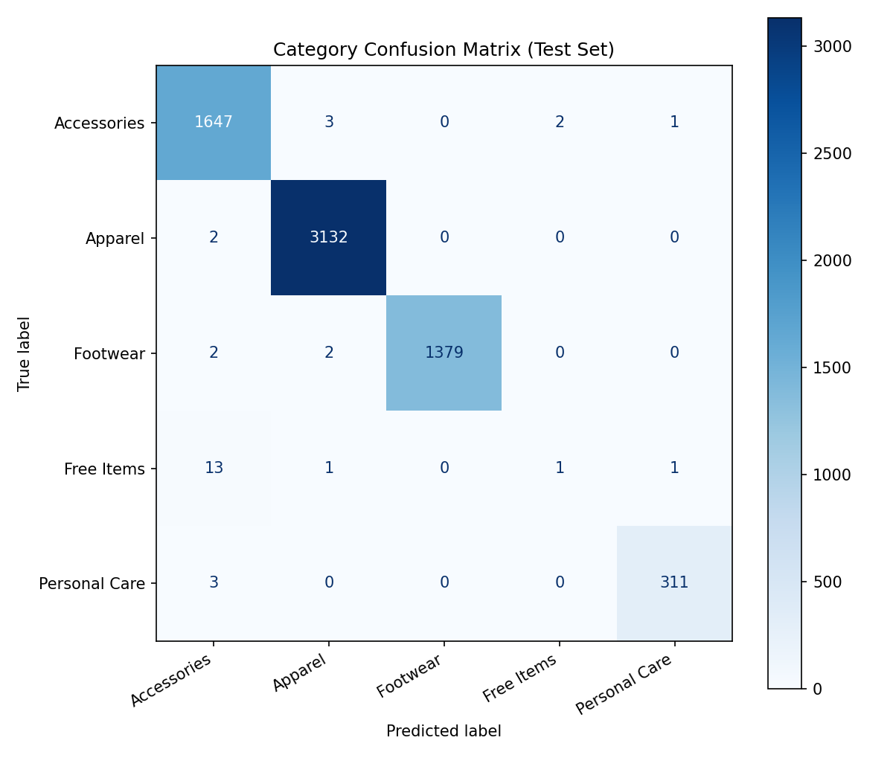

P1
CV Basic
Fashion Product Image Classification
6-task multi-task classification on 44K fashion product images, comparing CNN vs Transformer architectures
Category Acc 99.5%
Avg Attr F1 0.64
6 Tasks
PyTorch
timm
EfficientNet-B3
ViT-B/16
Multi-task Learning
Transfer Learning
Problem
Given a fashion product image, simultaneously predict 6 attributes: category (5 cls), subcategory (32 cls), article type (70 cls), color (47 cls), season (5 cls), and usage (8 cls). Key challenges include severe class imbalance (e.g., Black 6,774 vs Gold 30 images) and low image resolution (80×60).
Approach
- Architecture: Shared pretrained backbone + 6 independent classification heads
- Multi-task Loss: Weighted sum — α(1.0) × category + β(0.5) × mean(5 attribute losses)
- Early Stopping: Based on avg_attr_f1 instead of category_acc, since category saturates at 99% early
- Comparison: CNN (EfficientNet-B3) vs Transformer (ViT-B/16) under identical conditions
Results
| Task | Metric | EfficientNet-B3 | ViT-B/16 |
|---|---|---|---|
| Category (5) | Accuracy | 0.9954 | 0.9952 |
| Category (5) | Macro F1 | 0.8173 | 0.8191 |
| SubCategory (32) | Macro F1 | 0.8721 | 0.8690 |
| ArticleType (70) | Macro F1 | 0.8283 | 0.8194 |
| Color (47) | Macro F1 | 0.3621 | 0.3767 |
| Season (5) | Macro F1 | 0.6332 | 0.6415 |
| Usage (8) | Macro F1 | 0.5087 | 0.5282 |
| Avg Attr F1 | 0.6409 | 0.6469 |
Training Curves & Confusion Matrix



Key Insights
- CNN (EfficientNet) excels at fine-grained item classification due to local pattern recognition
- Transformer (ViT) excels at global attribute prediction due to context modeling
- Changing early stopping criterion from category_acc to avg_attr_f1 improved F1 from 0.52 to 0.66
- Selected EfficientNet-B3 as final model for deployment efficiency (12M vs 86M params)